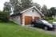
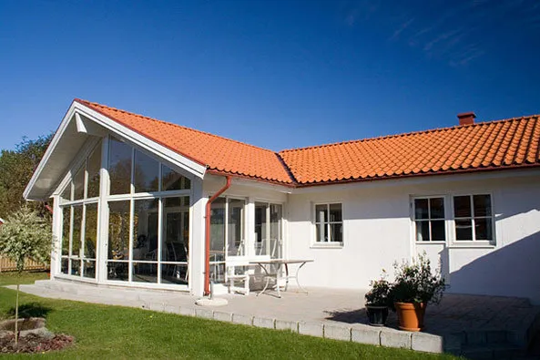
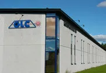
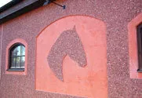

KETTIL BYGGKONSULT / REFERENSER
Olika byggnader.
Samma grund av kunskap.
Utforska kategorier ur Kettils befintliga referensurval.

Tranemo & LänghemGarage
Garagebyggnader från Kettils referensurval.
 Hökerum, Ulricehamn & Ambjörnarp
Hökerum, Ulricehamn & AmbjörnarpVillor
Från traditionella hus till större villor. Ett urval av företagets villaprojekt.
 Tranemo
TranemoHyreshus
Flerbostadshus enligt Kettils koncept.

Långasand, Appelviken, Glommen & Södra NäsFritidshus
Fritidsboenden presenterade i företagets referensurval.

GnosjöIndustribyggnader
Industribyggnad från Kettils referensprojekt.

Tranemo, Ambjörnarp & MånstadStall
Stallbyggnader med olika förutsättningar och användningar.